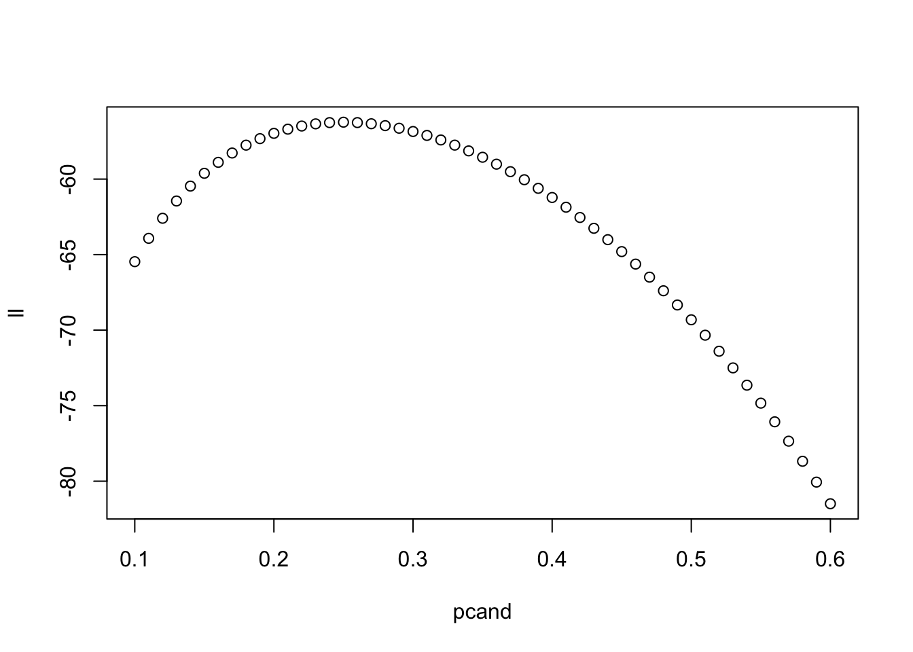

set.seed(1234)
y = rbinom(100, 1, 1/3)
myl = function(x) function(p) sum(log(dbinom(x, 1, p)))
pcand = seq(.1,.6,.01)
lik = myl(y)
ll = sapply(pcand, lik)
plot(pcand, ll)
Linear Models
Column vector \(\mathbf{y}_{n \times 1}\) collects responses \(y_1, \ldots, y_n\)
“Transpose” of a column vector produces a row vector
Row vector \(\mathbf{x}_{p \times 1}^t\) collects values of \(p\) covariates; the first value is assumed to be 1 unless otherwise specified.
The stack of \(n\) row vectors produces the matrix \(\bf{X}_{n \times p}\)
Elements of \(\bf{X}\) are denoted \(x_{ij}, i = 1, \ldots, n\), \(j = 1, \ldots p\)
Matrix transpose: \(\bf{X}^t\) is \(p \times n\) with \(i,j\) element given by \(x_{ji}\)
Matrix-vector product: \(\bf{X}^t\bf{y}\) is \(p \times 1\) and has \(k\)th element \(\sum_i x_{ki} \cdot y_i\)
Matrix-matrix product: \(\bf{X}_{m \times n}\bf{W}_{n \times q}\) is \(m \times q\) and has \(ij\) element \(\sum\limits_{k=1}^n x_{ik} \cdot w_{kj}\)
Matrix rank: the rank of a matrix is the number of linearly independent columns
Matrix inverse, identity matrix: solve \(\mathbf{A}\mathbf{x}= \mathbf{b}\) for \(x\): \(\mathbf{x}= \mathbf{A}^{-1} \mathbf{b}\); \(\mathbf{A}^{-1} \mathbf{A}= \mathbf{I}\), the latter a diagonal matrix with unit values on diagonal and zeroes elsewhere
Some “lemmas”: Let \(\bf{A}\) denote a \(p \times p\) matrix of real numbers, \(\bf{b}\) and \(\bf{c}\) denote \(p\)-vectors (column vectors)
Model is \(\mathbf{y}= \mathbf{X}\beta + \mathbf{e}\), squared error is given by \(\mathbf{e}(\beta)^t \mathbf{e}(\beta)\). Rewrite: \[ f(\beta) = (\mathbf{y}- \mathbf{X}\beta)^t(\mathbf{y}- \mathbf{X}\beta) = \mathbf{y}^t \mathbf{y}- 2 \mathbf{y}^t \mathbf{X}^t \beta + \beta ^t \mathbf{X}^t \mathbf{X}\beta \] To minimize, differentiate \(f\) with respect to \(\beta\) and equate to zero: \[ \nabla f = 0 \rightarrow \mathbf{X}^t(\mathbf{y}- \mathbf{X}\beta) = 0 \] yielding \(\hat{\beta} = (\mathbf{X}^t \mathbf{X})^{-1}\mathbf{X}^t \mathbf{y}\). Note that this formulation is not used to compute least-squares estimates.
Challenge: derive the standard errors for \(\hat{\beta}\).
Gauss-Markov
Definition: the likeihood function for a statistical model is a function of parameters proportional to the joint density of the data as prescribed by the model.
Suppose \(Y\) is a random variable with density function \(f(y;\theta)\); \(\theta\) is a vector of parameters. As an example, for the Normal density with mean \(\mu\) and variance \(\sigma^2\) we would have a parameter vector \(\theta = (\mu, \sigma^2)^t\). The realizations of \(Y\) are denoted \(y_1, \ldots, y_n\), and these are assumed to be independent. Then the joint density is the product \[ \prod_i f(y_i; \theta) \] and the likelihood function is any function of \(\theta\) proportional to this quantity.
Here we have \(Y \sim \mbox{bin}(1, 1/3)\), with 100 realizations in the vector y. We form the log likelihood function with unknown parameter \(p\) and plot it for a series of values of \(p\). The definition of myl below should be examined carefully: it is a closure, a function that returns a function. The design is that the call to myl supplies the data for evaluating the likelihood. The function that is returned has “binding” for x, and a single argument p. We create lik, which is a function of p, and then evaluate it over pcand, a grid of values of p.
Example:
set.seed(1234)
y = rbinom(100, 1, 1/3)
myl = function(x) function(p) sum(log(dbinom(x, 1, p)))
pcand = seq(.1,.6,.01)
lik = myl(y)
ll = sapply(pcand, lik)
plot(pcand, ll)
Maximum likelihood estimation of parameters proceeds by numerical or analytical optimization of the likelihood function. For various reasons we typically work with the log likelihood, or negative two times the log likelihood.
optim(.5, lik, control=list(fnscale=-1))Warning in optim(0.5, lik, control = list(fnscale = -1)): one-dimensional optimization by Nelder-Mead is unreliable:
use "Brent" or optimize() directly$par
[1] 0.25
$value
[1] -56.23
$counts
function gradient
28 NA
$convergence
[1] 0
$message
NULLChallenge: for the binary data problem, provide the analytical maximum of the likelihood function.
Here we have a contrived logistic regression model of a particular definition of hypertension, fit with glm and binomial family. Before running glm, estimates are produced by maximizing the likelihood function directly, again using a closure.
library(NHANES)
library(dplyr)
nh11 = NHANES |> filter(SurveyYr=="2011_12")
nh11$hyp = nh11$BPSysAve > 130
blclo = function(dat) function(beta) sum(log(dbinom(dat$hyp, 1,
plogis(beta[1]+(dat$Sex=="male")*beta[2]+(dat$Age)*beta[3]))))
blik = blclo(na.omit(nh11[,c("hyp", "Sex", "Age")]))
optim(c(-4,0,0), blik, control=list(fnscale=-1))$par
[1] -4.44947 0.27412 0.06139
$value
[1] -1742
$counts
function gradient
98 NA
$convergence
[1] 0
$message
NULLsummary(glm(hyp~Sex+Age, family="binomial", data=nh11))
Call:
glm(formula = hyp ~ Sex + Age, family = "binomial", data = nh11)
Coefficients:
Estimate Std. Error z value Pr(>|z|)
(Intercept) -4.45006 0.14994 -29.68 <2e-16 ***
Sexmale 0.27452 0.08540 3.21 0.0013 **
Age 0.06140 0.00249 24.69 <2e-16 ***
---
Signif. codes: 0 '***' 0.001 '**' 0.01 '*' 0.05 '.' 0.1 ' ' 1
(Dispersion parameter for binomial family taken to be 1)
Null deviance: 4311.5 on 4280 degrees of freedom
Residual deviance: 3484.6 on 4278 degrees of freedom
(719 observations deleted due to missingness)
AIC: 3491
Number of Fisher Scoring iterations: 5Note that the output of optim and the parameter estimates from glm are very close. The computations are completely different. Let’s unpack the log likelihood computation above.
blclo = function(dat) function(beta) sum(log(dbinom(dat$hyp, 1,
plogis(beta[1]+(dat$Sex=="male")*beta[2]+(dat$Age)*beta[3]))))The important part is function(beta) which is returned with bindings for dat, a data.frame that is assumed to have variables hyp, Sex, Age. The outcome we are modeling is dat$hyp which is a binary variable. We are modeling it as \(\mbox{bin}(1,p)\).
\(p\) is a quantity that satisfies \(p \in (0,1)\). We use plogis(x) to evaluate \[
p(x) = \frac{e^x}{1+e^x}
\] which also lives in the unit interval. However, we use the regression formulation \[
\beta_1+\beta_2 \cdot \mbox{Sex} + \beta_3 \cdot \mbox{Age}
\]